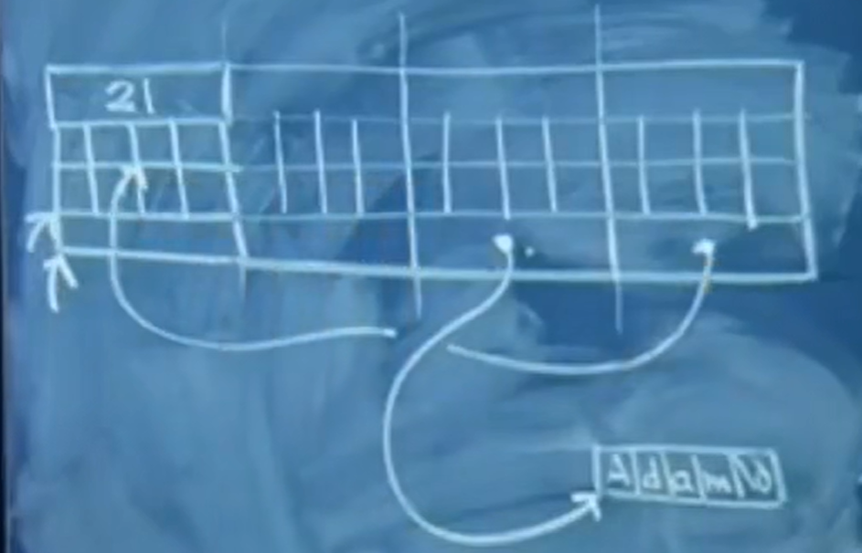
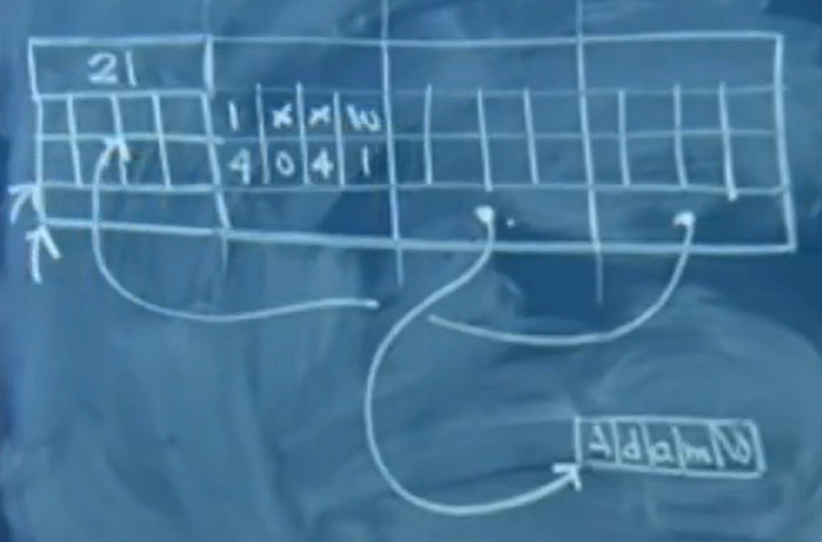
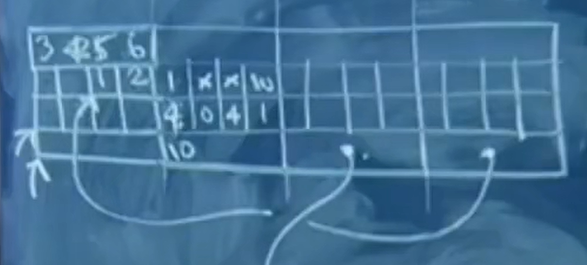

# 斯坦福编程范式 CS107_3
# 1. 大端存储，小端存储
端模式（Endian）的这个词出自 Jonathan Swift 书写的《格列佛游记》。这本书根据将鸡蛋敲开的方法不同将所有的人分为两类，** 从圆头开始将鸡蛋敲开的人被归为 Big Endian，从尖头开始将鸡蛋敲开的人被归为 Littile Endian（这句话最为形象）。** 小人国的内战就源于吃鸡蛋时是究竟从大头（Big-Endian）敲开还是从小头（Little-Endian）敲开。在计算机业 Big Endian 和 Little Endian 也几乎引起一场战争。在计算机业界，Endian 表示数据在存储器中的存放顺序。下文举例说明在计算机中大小端模式的区别。
如果将一个 32 位的整数 0x12345678 存放到一个整型变量（int）中，这个整型变量采用大端或者小端模式在内存中的存储由下表所示。为简单起见，本文使用 OP0 表示一个 32 位数据的最高字节 MSB（Most Significant Byte），使用 OP3 表示一个 32 位数据最低字节 LSB（Least Significant Byte）。
| 地址偏移 | 大端模式 | 小端模式 |
|---|---|---|
| 0x00 | 12（OP0） | 78（OP3） |
| 0x01 | 34（OP1） | 56（OP2） |
| 0x02 | 56（OP2） | 34（OP1） |
| 0x03 | 78（OP3） | 12（OP0） |
- 小端：
较高的有效字节存放在较高的的存储器地址，较低的有效字节存放在较低的存储器地址。 - 大端：
较高的有效字节存放在较低的存储器地址，较低的有效字节存放在较高的存储器地址。
采用大小模式对数据进行存放的主要区别在于在存放的字节顺序，大端方式将 高数据位 存放在 低地址 ，小端方式将 高数据位 存放在 高地址 。采用大端方式进行数据存放符合人类的正常思维，而采用小端方式进行数据存放利于计算机处理。到目前为止，采用大端或者小端进行数据存放，其孰优孰劣也没有定论。大端与小端模式的差别体现在一个处理器的寄存器，指令集，系统总线等各个层次中。
用函数判断系统是 Big Endian 还是 Little Endian
方法一：
short 类型占用 2 字节， char 类型占用 1 字节
//如果字节序为big-endian，返回true;
//反之为 little-endian，返回false
bool IsBig_Endian()
{
unsigned short test = 0x1234;
if(*( (unsigned char*) &test ) == 0x12)
return TRUE;
else
return FALSE;
}//IsBig_Endian()
方法二：
int checkCPUendian()// 返回 1，为小端；反之，为大端； | |
{ | |
union | |
{ | |
unsigned int a; | |
unsigned char b; | |
}c; | |
c.a = 1; | |
return 1 == c.b; |
-
字节序的使用：
大端模式处理器的字节序到网络字节序不需要转换，此时 ntohs (n)=n，ntohl =n；而小端模式处理器的字节序到网络字节必须要进行转换 (同理，有时候需要将大端字节顺序转换成小端字节顺序，也用这个函数，因为这个函数本来就是用来颠倒字节顺序的)，转换如下：
#if defined(BIG_ENDIAN) && !defined(LITTLE_ENDIAN)
#define htons(A) (A)
#define htonl(A) (A)
#define ntohs(A) (A)
#define ntohl(A) (A)
#elif defined(LITTLE_ENDIAN) && !defined(BIG_ENDIAN)
#define htons(A) ((((uint16_t)(A) & 0xff00) >> 8 ) | \\
(((uint16_t)(A) & 0x00ff) << 8 ))
#define htonl(A) ((((uint32_t)(A) & 0xff000000) >> 24) | \\
(((uint32_t)(A) & 0x00ff0000) >> 8 ) | \\
(((uint32_t)(A) & 0x0000ff00) << 8 ) | \\
(((uint32_t)(A) & 0x000000ff) << 24))
#define ntohs htons
#define ntohl htohl
#else
#error Either BIG_ENDIAN or LITTLE_ENDIAN must be #defined, but not both.
#endif
# 2. 关于数组
# 例子一
int array[10]; |
array 等价于 &array [0]
array + k 等价于 &array [k]
*array 等价于 array [0]
*(array + k) 等价于 array [k]
# 例子二
int arr[5]; | |
arr[3] = 128; | |
((short *)arr)[6] = 2; | |
cout << arr[3] << endl; |
这个时候打印出来的不是 128，而是 512 + 128，这个时候在 arr [3] 中的内容为：
00000000 00000010 128 = 512 + 128 （这里在课上应该是采用的小端方法）
((short *)(((char *)(&arr[1])) + 8))[3] = 100; |
# 3. 关于 Struct
struct student{ | |
char *name; | |
char suid[8]; | |
int numUnits; | |
}; | |
student pupils[4]; | |
pupils[0].numUnits = 21; | |
pupils[2].name = strdup("Adam"); //strdup 是内存复制的缩写，动态地分配足够的空间来存储字符串 |
进行如下操作后，内存中的情况如下图所示
pupils[3].name = pupils[0].suid + 6; |

继续进行如下操作
strcpy(pupils[1].suid,"40415xx"); |

继续进行如下操作
strcpy(pupils[3].name,"123456"); |

这样就会导致 student [0] 的 numUnits 会是一个非常大的数，但是 pupils [3].name 还是正常的 123456.
继续进行如下操作
pupils[7].suid[11] = 'A'; |
# 4. 高级函数？
void swap(int *ap,int *bp){ | |
int temp = *ap; | |
*ap = *bp; | |
*bp = temp; | |
} | |
int x = 7; | |
int y = 117; | |
swap(&x,&y); |